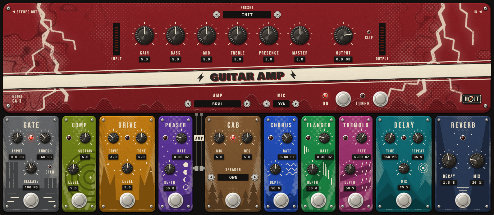

HØJT DSP

Six plugins / VST3 + CLAP / Windows, macOS, Linux
A guitar amp with a board of ten pedals, a drum kit made without samples, a low-latency pitch shifter, a plucked bass, an ambient pad and glass bells. Each is drawn as a stompbox, and every one has sound examples on its page.